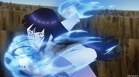

Cyberespace transatentionnelle késaco?
Le cyberespace est une “une puissante métaphore aux représentations contradictoires”. La revue des médias a publié un article tentant d’expliquer sa complexité.
Retenons ce passage : "Il n’existe pas de définition universelle du cyberespace. Bien au contraire, il en circule des dizaines qui, pour la plupart, peinent à saisir l’ensemble des dimensions qui le composent et le rendent si unique. Le cyberespace, c’est d’abord et avant tout un espace d’information généré par l’interconnexion globale des systèmes d’information et de communication, dans lequel les données sont créées, stockées et partagées. Le terme désigne à la fois : l’infrastructure physique qui est à la source de cet environnement, à savoir les différents éléments qui composent l’internet — ce réseau planétaire de réseaux informatiques — comme les câbles, les serveurs, les routeurs, les satellites et tous les appareils connectés qui sont ancrés dans le territoire géographique physique et politique ; et l’espace intangible dans lequel circulent les données, l’information et les idées, l’espace où se produisent des interactions entre les individus qui sont derrière leur écran partout dans le monde à une vitesse quasi instantanée.Mais surtout, au-delà de sa définition technique, le cyberespace est une puissante métaphore qui fait l’objet de représentations contradictoires. Une représentation géopolitique, selon la définition du géographe Yves Lacoste, est une construction, un ensemble d’idées plus ou moins logiques et cohérentes, qui a une fonction dans les conflits géopolitiques. Elle s’appuie sur des faits objectifs mais garde un caractère profondément subjectif. Les représentations ne sont pas neutres, elles influencent comme elles peuvent servir les stratégies des acteurs.
Le concept de cyberespace ne correspond pas à la définition classique d’un territoire en géographie, mais il est la représentation d’un nouvel espace, voire d’un territoire, qui peut varier en fonction des acteurs et sert une fonction dans le cadre de rivalités de pouvoirs. Le concept même de cyberespace est ainsi apparu pour deux raisons contradictoires.”
Ce terme est apparu pour la première fois sous la plume de William Gibson dans son best seller “Neuromancer” publié en 1984. Il décrit dans cette science fiction un espace tridimensionnel d’une « infinie complexité », généré électroniquement, dans lequel ses personnages entrent en se connectant par ordinateur ; une représentation mentale que s’approprieront des générations d’internautes et qui imprègne l’imaginaire des pionniers de l’internet.
La transattention
est un état de sur-attention “qui leur permet à tout moment de réagir au moindre stimulus intellectuel intéressant et opportun, la transattention se mobilise en différentes circonstances et supports. Cette surattention permet de capter et de relier la moindre information pertinente du fait d’un état d’éveil permanent, mais elle favorise aussi la détection des opportunités de recherche.” Cet état apporterait des capacités d’éveil qui permettraient d’analyser et d'interpréter des informations instantanées en les rendant durable.
Ce cyberespace transattentionnel serait donc un espace sans frontières, où il serait possible de réagir mais aussi d’interagir via différents liens de connexions.
Cette page fait partie du cyberespace transattentionnel. En effet, je donne mon point de vue, réagis en me permettant de reprendre certaines références et d'autres pages. Je parle sur ce site d’un animé que j’apprécie : Naruto. C’est une tâche superficielle qui ne demande pas beaucoup de concentration et d’efforts intellectuels. Cependant il faut tout de même avoir un esprit critique pour analyser Naruto et comprendre toutes les références. Cet effort rejoint la définition de la transattention. C’est une page de “fans” parmi tant d’autres comme montre la multitude des liens hypertextes. Je me permets donc d’affirmer que ce site, de part son rôle et ses actions, fait parti du cyberespace transattentionnel.
Cyberespace transattentionnel et naruto
Cyberespace transattentionnel
Voici quelques images :

Voici quelques séquences de cette curieuse série. J'espère, qu'après cette présentation, vous serez aussi fasciné.e.s que moi de cet univers.